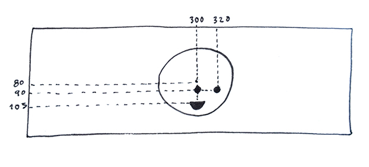
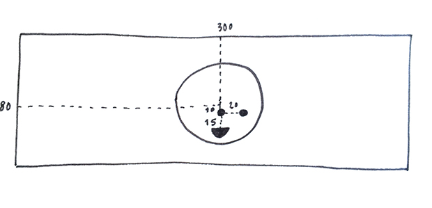

1) Center elements with built-in variables: width and height
We have already used two built-in variables in the previous learning activity: mouseX and mouseY. Variables are placeholder names for values that change over time. We type mouseX knowing that p5 will replace that name with a number that represents the latest X position of the mouse. This number will change as the user moves the mouse across the canvas.
Next we will use two other variables built into p5: width and height. In the following example, their values are 600 and 240 ––the dimensions we gave our canvas when we created it in the setup function.
In the sketch below we use width and height to place an ellipse at the center of the screen:
The advantage of using these variables to place our ellipse is that, if we change the size of our sketch later, the ellipse will still be centered. To prove this, try changing the width and height of the canvas to 500 and 200, and run the sketch again.
width and height can also be use to place shapes in positions like "a third of the screen across", or "two thirds of the screen across", or "two thirds of the screen down". Try drawing these:
ellipse(width/3, height/2, 60, 60);ellipse(2*width/3, height/2, 60, 60);ellipse(width/3, 2*height/3, 60, 60);
2) Place elements at random positions
We can also place our ellipse at a random position each time our program runs. To do this, we use p5's random function. This function is different from other functions we have been using (like ellipse and rect) in that it returns a value. Each time they are called:
random(50, 100) returns a number between 50 and 100random(1, 5) returns a number between 1 and 5
When the first parameter is omitted, random assumes it is 0:
random(100) returns a number between 0 and 100random(5) returns a number between 0 and 5
In the p5 editor, try running the following piece of code several times:
function setup(){
ellipse(random(100), 60, 60, 60);
}
Now try these, and play with their values:
ellipse(random(100),random(100), 60, 60);ellipse(random(300, 400), 60, 60, 60);ellipse(random(20, 60), random(60, 120), 60, 60);
What happens if we replace the last two parameters with calls to random?
3) Position elements with custom variables
Suppose we want to have 5 ellipses in a row. This is one way to do it.
If we now want to move them 10 pixels down, we have to change all five y positions, setting them to be 70 instead of 60:
ellipse(120, 70, 60, 60);ellipse(200, 70, 60, 60);ellipse(280, 70, 60, 60);ellipse(360, 70, 60, 60);ellipse(440, 70, 60, 60);
This is a repetitive task, and error-prone. Instead, we can use variables. So far, we have use p5 built-in variables: mouseX, mouseY, width and height. We can read their values, but not change them. In the next example, we create our own variable. First we declare our own variable, and call it y. Then we assign the value 70 to our variable. Now if we want to move all five ellipses 10 pixels down, we can just change the value of our variable: one line of code instead of five.
Now try moving all ellipses a random y position.
4) Make the position of our happy face random
In our original happy face, the positions of face, eyes, and mouth, are relative to the top left corner of the canvas:

function setup() {
createCanvas(600, 120);
}
function draw() {
background(20);
//face
fill(255);
ellipse(300, 80, 100, 100);
//eye 1
fill(0);
ellipse(300, 90, 10, 10);
//eye 2
ellipse(320, 90, 10, 10);
//mouth
// arc(300, 225, 30, 30, 0, radians(180), PIE);
//mouth
arc(300, 105, 30, 30, 0, radians(180), PIE);
}
To make its position random, let's first position the elements of the face relative to the center of the face:

Now we can make that center variable. This time we need two variables: x, and y.
function setup() {
createCanvas(600, 120);
}
function draw() {
background(20);
var x = 300;
var y = 80;
//Face
fill(255);
ellipse(x, y, 100, 100);
//Eye 1
fill(0);
ellipse(x, y+10, 10, 10);
//Eye 2
ellipse(x+20, y+10, 10, 10);
//Mouth
arc(x, y+25, 30, 30, 0, radians(180), PIE);
}
Finally, we can make the position of the center random:
The random value will be applied whenever you refresh this page, which causes the sketch to run again.
For another example, see Daniel Shiffman's mouse-following Zoog drawing